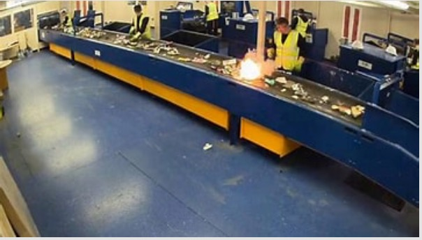
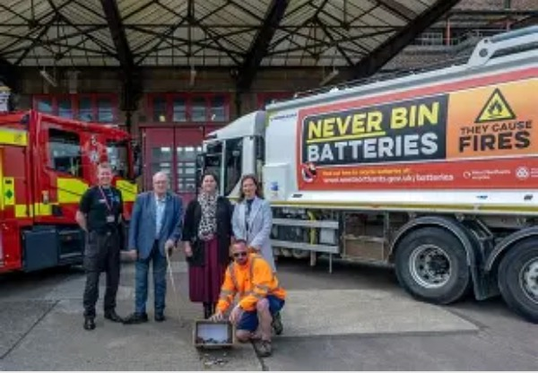
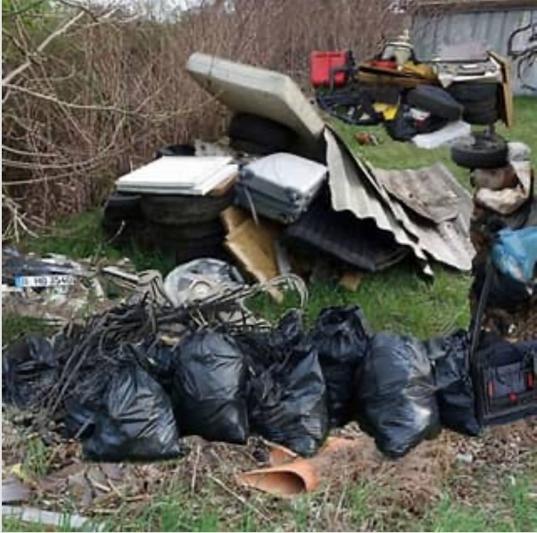
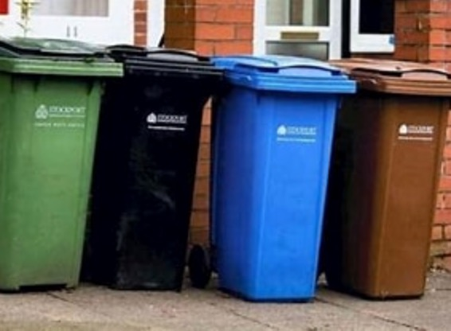

Waste Management by Alasdair Meldrum
Albion Environmental Limited was established in 2002 and has developed into one of the UK's leading consultants specialising in waste management, environmental, health and safety solutions. They deliver strategic advice, support and training to the waste management and construction industries in both the public and private sectors.
MD Alasdair Meldrum launched into a fact packed presentation on many topical environmental subjects using statistics to drive home his message.

Fire caused by a lithium battery
Although lithium-ion batteries are a vital part of modern society, with the batteries forming the backbone of most modern technologies that require battery support, from everyday household electronics such as laptops, mobile phones, and tablets, to large-scale energy storage systems and electric vehicles (EVs) they can be extremely dangerous.

With their growing prominence, lithium-ion batteries also carry a fire safety risk that needs to be considered. It is worth noting that the frequency of fire from lithium-ion batteries is actually very low, but the consequences can be significant. In the UK, battery fires have surged significantly with over 1,200 incidents reported in 2023/24, marking a 71% increase from the previous year.
This alarming rise is attributed to lithium batteries being improperly disposed of in household waste, leading to fires that pose serious risks to public.
Alasdair then focused on criminal waste. Waste criminals are all around us: respondents estimate that 20% of all waste produced may be illegally managed - enough to fill Wembley stadium 35 times. Waste crime is big business: the legitimate waste industry estimates it costs £1bn a year (ESA 2021). Rogue operators are financially motivated: they mis-describe waste to avoid regulations and evade landfill tax to illegally boost their profits.
Respondents estimated that financial gains are attracting organised crime, estimating that 35% of waste crime is committed by organised crime groups. Waste crime is bad for good business: legitimate waste operators are undercut by criminals offering below market rate services, and landowners and farmers whose land is dumped on face significant clean-up costs.

What is a deposit return scheme, Alasdair asked his large Rotarian audience? Deposit return schemes are used in many countries across the world to encourage people to recycle drinks containers such as bottles and cans.
Many older Scots will recall being able to get money back on their "ginger" (fizzy drink) bottles when they were children - and it works in a similar way.
Anyone who buys a drink in a certain type of container is charged a small deposit which is returned to them when they take the bottle or can to a recycling point.
The aim is to incentivise recycling, reduce litter and help tackle climate change by reducing the amount of material going to landfill. The glass industry is not keen on the deposit return model and would rather see glass recycled separately, for instance through kerbside collections.
It argues that more than 60% of glass is already recycled and that figure is set to improve further, even without a DRS which it says has many disadvantages.
It has been suggested the Scottish scheme could lead to an increase in crushed glass being used as aggregate for roads rather than melted down and reused.
Concerns have also been raised by some businesses and UK ministers that having different schemes on either side of the border would harm cross border trade.

And then Alasdair ventured into the prickly subject of UK Household waste statistics.
The average UK household wastes food costing around £470 annually, with the average household waste estimated to be worth £14/15 billion per year.
The UK household waste statistics reveal a mixed picture of recycling and disposal trends. In 2023, the provisional UK recycling rate for waste from households was 44.6%.
Euan Lawrence gave a worthy vote of thanks.
Share this: